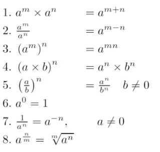
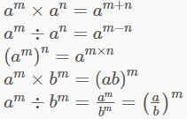
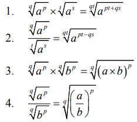
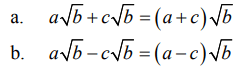
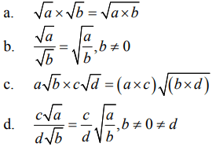
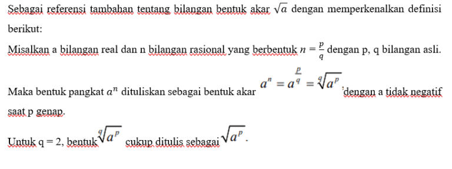
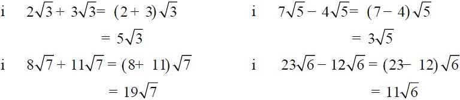
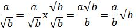
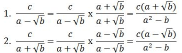

MATERI
BENTUK AKAR
Bentuk Akar dan Bilangan Berpangkat Pecahan
Sekarang akan dibahas untuk bentuk akar dan bagaimana jika bilangan bulat namun memiliki pangkat yang berbentuk pecahan? Apakah soal tersebut bisa diselesaikan? Apakah sama caranya dengan perpangkatan bilangan bulat dan pangkat bilangan bulat biasa?
Penarikan Akar Pangkat
Akar pangkat dua merupakan kebalikan dari pangkat dua. Akar pangkat dua (akar kuadrat) dilambangkan dengan tanda √ .
92 = 81 berarti √81 = 9
Akar kuadrat suatu bilangan dapat dicari dengan cara seperti berikut.
√625 = …
-
- Pisahkan dua angka di sebelah kanan dengan tanda titik menjadi 6. 25.
- Carilah akar terbesar dari bilangan disebelah kiri titik (6) yaitu 2.
- 22= 4, angka 4 ditulis dibawah angka 6 kemudian dikurangkan, yaitu 6 – 4 = 2.
- Turunkan angka 25 melengkapi sisa 2 menjadi 2. 25.
- Hasil penarikan akar tadi (2) kalikan 2 menjadi 4.
- Carilah bilangan n yang memenuhi 4n × n sehingga hasil kalinya 225 atau bilangan terbesar di bawah 225. Pada contoh nilai n yang sesuai yaitu 5, sehingga 45 × 5 = 225
- Angka 5 ini diletakkan melengkapi 2 hasil penarikan akar tadi menjadi 25.
- Oleh karena 225 – 225 = 0 maka 25 merupakan hasil akhir penarikan akar kuadrat. Bila hasil pengurangannya belum nol maka lakukan penurunan angka berikutnya seperti langkah 4 dan 5. Jadi, √625 = 25.
Bilangan Berpangkat Bilangan Rasional
Pangkat rasional adalah bentuk pangkat pecahan. Rasio adalah perbandingan. Jadi, pangkatnya itu berupa pecahan.
Pangkat rasional mempunyai nilai sama dengan bentuk akar.
Berikut ini adalah aturan perpangkatan:

Sifat-Sifat Operasi Bilangan Berpangkat Bilangan Rasional
Untuk a dan b bilangan real, b≠0 dan m,n adalah bilangan rasional berlaku:

Bentuk Akar
Pada dasarnya sifat-sifat yang telah dimiliki oleh bilangan berpangkat juga dimiliki oleh bilangan bentuk akar, yakni:
| Untuk bilangan real a, b dan n, m bilangan rasional berbentuk n=p/q dan m=s/t dengan p, q, s, t bilangan asli berlaku: |

dengan a dan b tidak negatif saat p atau s genap.
Sifat-Sifat Bentuk Akar
Untuk a, b, c, dan d bilangan real, berlaku:
1. Penjumlahan dan Pengurangan bentuk akar

2. Perkalian dan pembagian bentuk akar


Operasi Aljabar Bentuk Akar
Operasi aljabar yang sangat umum adalah penjumlahan, pengurangan, perkalian, dan pembagian. Pembahasannya adalah sebagai berikut:
a. Penjumlahan dan Pengurangan Bentuk Akar

Rumus operasi penjumlahan bentuk akar:
a√c + b√c = (a + b) √c
Rumus operasi pengurangan bentuk akar:
a√c – b√c = (a – b) √c
b. Operasi Perkalian
Untuk masing-masing a dan b adalah bilangan rasional positif, maka rumus yang berlaku adalah:
√a x √b = √a x b
c. Operasi Pembagian
Untuk masing-masing a, b, p, dan q adalah bilangan rasional positif, maka rumus yang berlaku adalah:
(p√a)/(q√b)= p/q √(a/b)
Merasionalkan Penyebut Pecahan Bentuk Akar
Cara merasionalkan penyebut pecahan dengan bentuk akar dapat dikategorikan menjadi beberapa kategori. Di antaranya adalah:
a. Bentuk pecahan a/√b
Pada pecahan a/√b ada bilangan rasional a dan bentuk akar √b cara merasionalkannya adalah dengan membuat perkalian antara √b/√b dengan pecahannya. Nantinya bentuk operasi perkalian bentuk akarnya menjadi seperti ini:

b. Bentuk pecahan atau c/a-√b atau c/a+√b
Cara merasionalkan bentuk akar selanjutnya berhubungan dengan pasangan hasil kali (a – √b) dan (a + √b), dimana bilangan rasional berupa a dan b serta bentuk akarnya berupa √b. Kedua pasangan hasil kali ini dapat diselesaikan dengan sifat distributif seperti (a + √b)( a – √b) = a² – a√b + a√b – b = a² – b.
Bilangan (a + √b) yang dikalikan dengan (a – √b) menghasilkan bilangan rasional. Dalam hal ini (a – √b) merupakan sekawan dari (a + √b) dan sebaliknya atau (a – √b) dan (a + √b) merupakan contoh sekawan bentuk akar. Contohnya 3 – √2 sekawan dengan 3 + √2 dan 5 + √3 sekawan dengan 5 – √3.
Untuk cara merasionalkan pecahan dengan bentuk tersebut akarnya bisa menjadi seperti ini:
